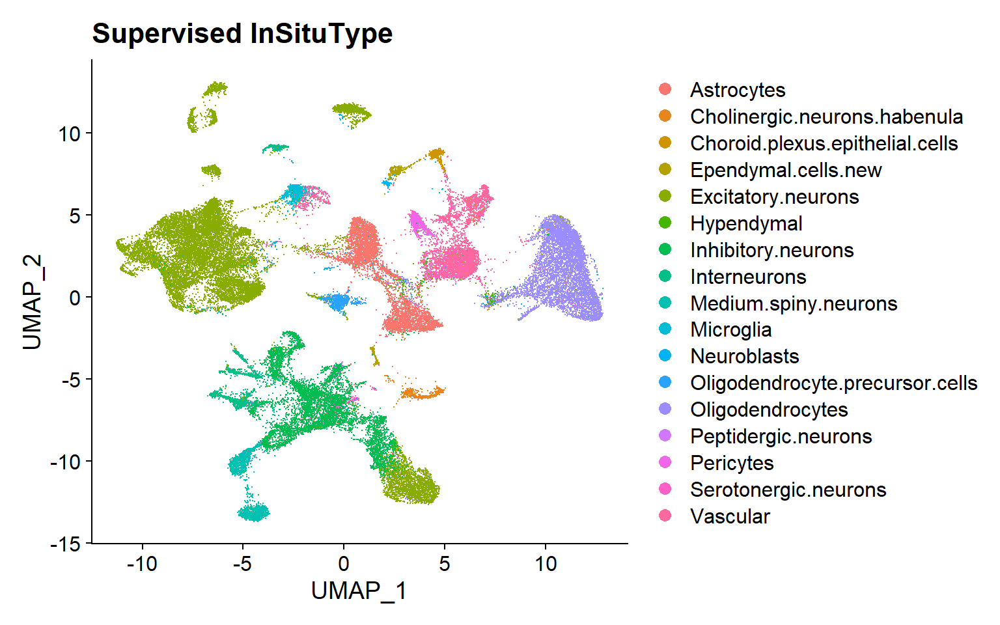
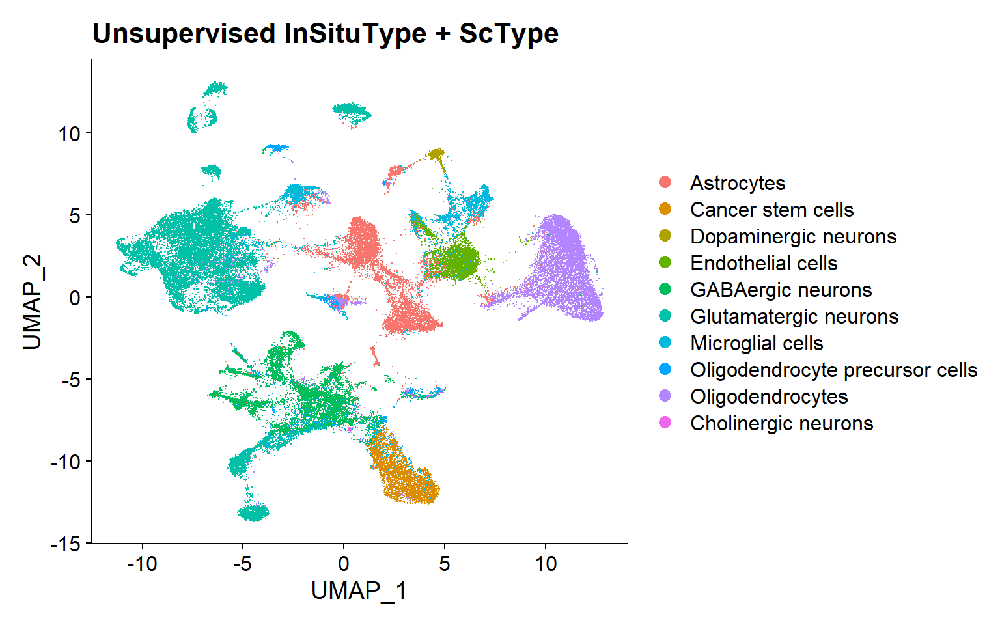

Cell typing methods for CosMx™ SMI Data (examples)
Last updated: 2025-09-03
Checks: 7 0
Knit directory: CosMx_pipeline_LGA/
This reproducible R Markdown analysis was created with workflowr (version 1.7.1). The Checks tab describes the reproducibility checks that were applied when the results were created. The Past versions tab lists the development history.
Great! Since the R Markdown file has been committed to the Git repository, you know the exact version of the code that produced these results.
Great job! The global environment was empty. Objects defined in the global environment can affect the analysis in your R Markdown file in unknown ways. For reproduciblity it’s best to always run the code in an empty environment.
The command set.seed(20250517) was run prior to running
the code in the R Markdown file. Setting a seed ensures that any results
that rely on randomness, e.g. subsampling or permutations, are
reproducible.
Great job! Recording the operating system, R version, and package versions is critical for reproducibility.
Nice! There were no cached chunks for this analysis, so you can be confident that you successfully produced the results during this run.
Great job! Using relative paths to the files within your workflowr project makes it easier to run your code on other machines.
Great! You are using Git for version control. Tracking code development and connecting the code version to the results is critical for reproducibility.
The results in this page were generated with repository version bdf4703. See the Past versions tab to see a history of the changes made to the R Markdown and HTML files.
Note that you need to be careful to ensure that all relevant files for
the analysis have been committed to Git prior to generating the results
(you can use wflow_publish or
wflow_git_commit). workflowr only checks the R Markdown
file, but you know if there are other scripts or data files that it
depends on. Below is the status of the Git repository when the results
were generated:
Ignored files:
Ignored: .Rhistory
Ignored: .Rproj.user/
Ignored: NBClust-Plots/
Ignored: analysis/.Rhistory
Ignored: data/flatFiles/CoronalHemisphere/Run1000_S1_Half_exprMat_file.csv
Ignored: data/flatFiles/CoronalHemisphere/Run1000_S1_Half_fov_positions_file.csv
Ignored: data/flatFiles/CoronalHemisphere/Run1000_S1_Half_metadata_file.csv
Ignored: output/processed_data/Log/
Ignored: output/processed_data/RC/
Ignored: output/processed_data/SCT/
Ignored: output/processed_data/exprMat_unfiltered.RDS
Ignored: output/processed_data/fov_positions_unfiltered.RDS
Ignored: output/processed_data/metadata_unfiltered.RDS
Ignored: output/processed_data/negMat_unfiltered.RDS
Ignored: output/processed_data/seu_filtered.RDS
Ignored: output/processed_data/seu_semifiltered.RDS
Unstaged changes:
Modified: CosMx_pipeline_LGA.Rproj
Note that any generated files, e.g. HTML, png, CSS, etc., are not included in this status report because it is ok for generated content to have uncommitted changes.
These are the previous versions of the repository in which changes were
made to the R Markdown (analysis/clus_examples.Rmd) and
HTML (docs/clus_examples.html) files. If you’ve configured
a remote Git repository (see ?wflow_git_remote), click on
the hyperlinks in the table below to view the files as they were in that
past version.
| File | Version | Author | Date | Message |
|---|---|---|---|---|
| html | bdf4703 | lga-uoc | 2025-09-03 | Build site. |
| html | fe7b35d | lga-uoc | 2025-09-02 | Build site. |
| html | 43970ac | lga-uoc | 2025-09-02 | Build site. |
| Rmd | 1cf5794 | lga-uoc | 2025-09-02 | Edit website files |
Introduction
Cell typing is a fundamental step in gene expression analysis, as from this point onward, the results and subsequent analyses acquire biological meaning. In practice, this can be approached through unsupervised clustering, where cells are grouped based on the similarity of their gene expression profiles [1,2], followed by annotation of the resulting clusters based on their markers [3]. However, there are other approaches, such as supervised classification, which uses reference profiles to assign predefined cell types to cells based on their expression profiles; or semi-supervised methods, which classify cells based on a reference while also allowing the detection of new clusters or rare populations [3].
While clustering in scRNA-seq relies solely on gene expression, the multimodal nature of spatial transcriptomics, which includes spatial location data and histological or immunofluorescence images, has led to the development of new clustering methods that integrate this information to improve clustering quality [3]. In this context, the InSituType algorithm, developed by Danaher et al. [4] as part of Nanostring® official tools, allows the incorporation of complementary information and supports all three mentioned approaches: unsupervised or semi-supervised clustering, and supervised classification. For this reason, it was considered a particularly suitable option for this pipeline.
In this project, the proposed pipeline incorporates supervised and unsupervised InSituType, as well as an unsupervised clustering alternative, by executing the FindNeighbors and FindClusters functions from the Seurat package:
Supervised InSituType: based on a probabilistic model, employing a Bayesian classifier in its supervised version [4].
Unsupervised InSituType: based on a probabilistic model, employing an Expectation Maximization (EM) algorithm for the unsupervised and semi-supervised methods [4].
Seurat’s unsupervised clustering, using the Louvain algorithm: Seurat clustering functions allow for the application of different graph-based clustering methods, such as the Louvain algorithm. Despite using only gene expression for clustering, this algorithm has been reported to have a strong performance with spatial transcriptomics data, comparable to methods that also incorporate spatial information [3].
For simplicity, in the main pipeline example only one approach has been shown — Supervised InSituType. However, in this section, all three alternatives can be explored.
Examples
Supervised InSituType
Cell typing with InSituType Supervised classification
To run the InSituType supervised algorithm, three inputs are needed: 1) the raw, unnormalized expression matrix; 2) a vector with the mean negative probe expression per cell; and 3) a reference profile.
Nanostring® provides various public profiles, both from scRNA-seq and CosMx™ SMI data. However, the function can also take other sources-profiles as long as they have the appropriate formatting.
With this information, the function will assigned pre-defined cell types from the reference to the cells according to their expression profiles.

| Version | Author | Date |
|---|---|---|
| 43970ac | lga-uoc | 2025-09-02 |
Unsupervised InSituType
Unsupervised clustering with InSituType + ScType annotation based on markers
To run the InSituType unsupervised clustering method, the needed inputs are: 1) the raw, unnormalized expression matrix; 2) a vector with the mean negative probe expression per cell; and 3) a number or range of clusters to be evaluated.
If a range is provided, the algorithm executes the clustering with all the different numbers of clusters and returns the one that provides the best fit.
Afterwards, in the proposed pipeline, annotation has been performed using the ScType package, a computational method for automated annotation based on marker genes [5].

| Version | Author | Date |
|---|---|---|
| 43970ac | lga-uoc | 2025-09-02 |
Unsupervised Seurat-Louvain
Unsupervised clustering with Seurat-Louvain + ScType annotation based on markers
In this case, the Seurat method can be run directly onto the Seurat object, providing the reduction and number of components to work with.
This algorithm, unlike InSituType, does not require a specific number of clusters to be evaluated, instead, it calculates the appropriate number of clusters for the desired resolution. Afterwards, in the proposed pipeline, annotation has been performed using the ScType package [5], as previously.

| Version | Author | Date |
|---|---|---|
| 43970ac | lga-uoc | 2025-09-02 |
Performance
| Chunk | Time_sec | Memory_Mb |
|---|---|---|
| Sup | 921.82 | 63.5 |
| Unsup | 145.55 | 16.6 |
| SNNClust | 65.25 | 61.1 |
In terms of time, the Seurat approach is faster out of the three, followed by unsupervised InSituType. On the other side, supervised InSituType algorithm takes almost 16 minutes to compute, but it is not more memory consuming than the Seurat approach, for example.
Bibliography
Qi R, Ma A, Ma Q, Zou Q. Clustering and classification methods for single-cell RNA-sequencing data. Briefings in Bioinformatics [Internet]. 2020 Jul 15 [cited 2025 May 7];21(4):1196–208. Available from: https://doi.org/10.1093/bib/bbz062
Zhang S, Li X, Lin J, Lin Q, Wong KC. Review of single-cell RNA-seq data clustering for cell-type identification and characterization. RNA [Internet]. 2023 May [cited 2025 May 7];29(5):517–30. Available from: https://www.ncbi.nlm.nih.gov/pmc/articles/PMC10158997/
Cheng A, Hu G, Li WV. Benchmarking cell-type clustering methods for spatially resolved transcriptomics data. Briefings in Bioinformatics [Internet]. 2023 Jan 1 [cited 2025 May 7];24(1):bbac475. Available from: https://doi.org/10.1093/bib/bbac475
Danaher P, Zhao E, Yang Z, Ross D, Gregory M, Reitz Z, et al. Insitutype: likelihood-based cell typing for single cell spatial transcriptomics [Internet]. Bioinformatics; 2022 [cited 2025 May 7]. Available from: http://biorxiv.org/lookup/doi/10.1101/2022.10.19.512902
Ianevski A, Giri AK, Aittokallio T. Fully-automated and ultra-fast cell-type identification using specific marker combinations from single-cell transcriptomic data. Nat Commun [Internet]. 2022 Mar 10 [cited 2025 Apr 16];13(1):1246. Available from: https://www.nature.com/articles/s41467-022-28803-w
R version 4.4.3 (2025-02-28 ucrt)
Platform: x86_64-w64-mingw32/x64
Running under: Windows 10 x64 (build 19045)
Matrix products: default
locale:
[1] LC_COLLATE=Spanish_Spain.utf8 LC_CTYPE=Spanish_Spain.utf8
[3] LC_MONETARY=Spanish_Spain.utf8 LC_NUMERIC=C
[5] LC_TIME=Spanish_Spain.utf8
time zone: Europe/Madrid
tzcode source: internal
attached base packages:
[1] stats graphics grDevices utils datasets methods base
other attached packages:
[1] patchwork_1.3.0 ggplot2_3.5.1 SeuratObject_4.1.4 Seurat_4.4.0
[5] kableExtra_1.4.0 dplyr_1.1.4 here_1.0.1 data.table_1.17.0
[9] workflowr_1.7.1
loaded via a namespace (and not attached):
[1] deldir_2.0-4 pbapply_1.7-4 gridExtra_2.3
[4] rlang_1.1.4 magrittr_2.0.3 git2r_0.36.2
[7] RcppAnnoy_0.0.22 spatstat.geom_3.5-0 matrixStats_1.4.1
[10] ggridges_0.5.6 compiler_4.4.3 getPass_0.2-4
[13] reshape2_1.4.4 png_0.1-8 systemfonts_1.1.0
[16] callr_3.7.6 vctrs_0.6.5 stringr_1.5.1
[19] pkgconfig_2.0.3 fastmap_1.2.0 labeling_0.4.3
[22] promises_1.3.2 rmarkdown_2.29 ps_1.8.1
[25] purrr_1.0.2 xfun_0.49 cachem_1.1.0
[28] jsonlite_1.8.9 goftest_1.2-3 later_1.4.1
[31] spatstat.utils_3.1-5 irlba_2.3.5.1 parallel_4.4.3
[34] cluster_2.1.8 R6_2.5.1 ica_1.0-3
[37] spatstat.data_3.1-6 bslib_0.8.0 stringi_1.8.4
[40] RColorBrewer_1.1-3 reticulate_1.40.0 spatstat.univar_3.1-4
[43] parallelly_1.41.0 scattermore_1.2 lmtest_0.9-40
[46] jquerylib_0.1.4 Rcpp_1.0.13-1 knitr_1.49
[49] tensor_1.5.1 future.apply_1.11.3 zoo_1.8-14
[52] sctransform_0.4.2 httpuv_1.6.15 Matrix_1.7-2
[55] splines_4.4.3 igraph_2.1.2 tidyselect_1.2.1
[58] abind_1.4-8 rstudioapi_0.17.1 yaml_2.3.10
[61] spatstat.random_3.4-1 spatstat.explore_3.5-2 codetools_0.2-20
[64] miniUI_0.1.1.1 processx_3.8.4 listenv_0.9.1
[67] plyr_1.8.9 lattice_0.22-6 tibble_3.2.1
[70] withr_3.0.2 shiny_1.10.0 ROCR_1.0-11
[73] evaluate_1.0.1 Rtsne_0.17 future_1.34.0
[76] survival_3.8-3 polyclip_1.10-7 xml2_1.3.6
[79] fitdistrplus_1.2-4 pillar_1.10.0 whisker_0.4.1
[82] KernSmooth_2.23-26 plotly_4.11.0 generics_0.1.3
[85] rprojroot_2.0.4 sp_2.2-0 munsell_0.5.1
[88] scales_1.3.0 globals_0.16.3 xtable_1.8-4
[91] glue_1.8.0 lazyeval_0.2.2 tools_4.4.3
[94] RANN_2.6.2 fs_1.6.5 leiden_0.4.3.1
[97] cowplot_1.1.3 grid_4.4.3 tidyr_1.3.1
[100] colorspace_2.1-1 nlme_3.1-167 cli_3.6.3
[103] spatstat.sparse_3.1-0 viridisLite_0.4.2 svglite_2.1.3
[106] uwot_0.2.3 gtable_0.3.6 sass_0.4.9
[109] digest_0.6.37 progressr_0.15.1 ggrepel_0.9.6
[112] htmlwidgets_1.6.4 farver_2.1.2 htmltools_0.5.8.1
[115] lifecycle_1.0.4 httr_1.4.7 mime_0.12
[118] MASS_7.3-64